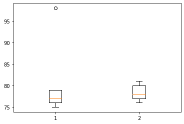
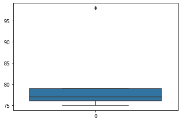
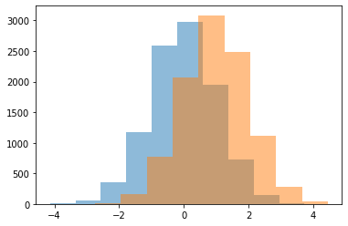
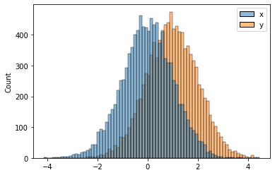
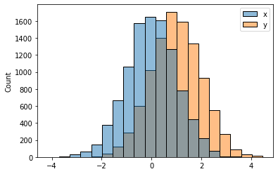
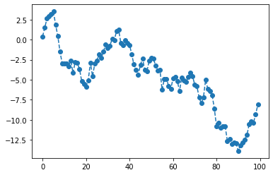
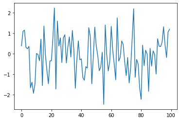
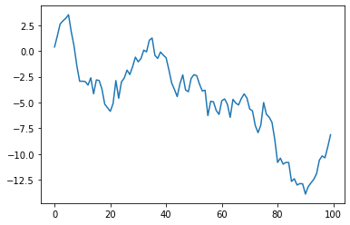

import seaborn as sns
import matplotlib.pyplot as plt
import numpy as np
import pandas as pdSeaborn 특징
- 특1: 입력으로 데이터프레임을 선호한다. (matplotlib은 array를 선호)
- 그렇다고 해서 데이터프레임이 아닌 경우 그림이 아예 안 그려지지는 않는다.
- 데이터프레임 형태는 long form 과 wide form 이 있다. (ref:https://seaborn.pydata.org/tutorial/data_structure.html#long-form-vs-wide-form-data)
- 참고로 long form이 더 우수한 저장형태!
- wide-df = [array1,array2,array3]
- long-df = [array_val, array_cat]
- 특2: matplotlib을 존경함. (ref:https://seaborn.pydata.org/)
sns boxplot
https://seaborn.pydata.org/generated/seaborn.boxplot.html
y1=[75,75,76,76,77,77,79,79,79,98] # A선생님에게 통계학을 배운 학생의 점수들
y2=[76,76,77,77,78,78,80,80,80,81] # B선생님에게 통계학을 배운 학생의 점수들 plt복습
plt.boxplot([y1,y2]){'whiskers': [<matplotlib.lines.Line2D at 0x7f2a64e7a950>,
<matplotlib.lines.Line2D at 0x7f2a64e7ac90>,
<matplotlib.lines.Line2D at 0x7f2a64e910d0>,
<matplotlib.lines.Line2D at 0x7f2a64e913d0>],
'caps': [<matplotlib.lines.Line2D at 0x7f2a64e83050>,
<matplotlib.lines.Line2D at 0x7f2a64e83350>,
<matplotlib.lines.Line2D at 0x7f2a64e91710>,
<matplotlib.lines.Line2D at 0x7f2a64e91a50>],
'boxes': [<matplotlib.lines.Line2D at 0x7f2a64e7a650>,
<matplotlib.lines.Line2D at 0x7f2a64e83d50>],
'medians': [<matplotlib.lines.Line2D at 0x7f2a64e836d0>,
<matplotlib.lines.Line2D at 0x7f2a64e91d90>],
'fliers': [<matplotlib.lines.Line2D at 0x7f2a64e83a10>,
<matplotlib.lines.Line2D at 0x7f2a64e9e110>],
'means': []}
sns: wide df
df1=pd.DataFrame({1:y1,2:y2})
df1| 1 | 2 | |
|---|---|---|
| 0 | 75 | 76 |
| 1 | 75 | 76 |
| 2 | 76 | 77 |
| 3 | 76 | 77 |
| 4 | 77 | 78 |
| 5 | 77 | 78 |
| 6 | 79 | 80 |
| 7 | 79 | 80 |
| 8 | 79 | 80 |
| 9 | 98 | 81 |
- 예시1
sns.boxplot(data=df1)<AxesSubplot:>sns.boxplot(np.stack([y1,y2],axis=1)) # 잘 쓰진 않는데 된다<AxesSubplot:>sns: long df
value 를 넣고 그 value가 어떤 category에 있는지 넣는 방법
df2 = pd.DataFrame({'score': y1+y2, 'class': ['A']*len(y1)+['B']*len(y2)})
df2| score | class | |
|---|---|---|
| 0 | 75 | A |
| 1 | 75 | A |
| 2 | 76 | A |
| 3 | 76 | A |
| 4 | 77 | A |
| 5 | 77 | A |
| 6 | 79 | A |
| 7 | 79 | A |
| 8 | 79 | A |
| 9 | 98 | A |
| 10 | 76 | B |
| 11 | 76 | B |
| 12 | 77 | B |
| 13 | 77 | B |
| 14 | 78 | B |
| 15 | 78 | B |
| 16 | 80 | B |
| 17 | 80 | B |
| 18 | 80 | B |
| 19 | 81 | B |
- 예시1
sns.boxplot(data=df2, x='class', y='score')<AxesSubplot:xlabel='class', ylabel='score'>sns: array
- 예시1
sns.boxplot(data=y1)<AxesSubplot:>
- 예시2
sns.boxplot(y=y1)<AxesSubplot:>- 예시3
sns.boxplot(x=y1)<AxesSubplot:>sns histplot
- 데이터
x = np.random.randn(10000)
y = np.random.randn(10000) + 1plt 복습
plt.hist(x,alpha=0.5)
plt.hist(y,alpha=0.5)(array([2.000e+00, 1.500e+01, 1.550e+02, 7.670e+02, 2.062e+03, 3.085e+03,
2.479e+03, 1.117e+03, 2.790e+02, 3.900e+01]),
array([-3.5473064 , -2.74724651, -1.94718662, -1.14712673, -0.34706684,
0.45299304, 1.25305293, 2.05311282, 2.85317271, 3.6532326 ,
4.45329248]),
<BarContainer object of 10 artists>)
- 예시2
plt.hist([x,y]);sns: wide df
df1=pd.DataFrame({'x':x, 'y':y})
df1| x | y | |
|---|---|---|
| 0 | 0.392340 | -0.520932 |
| 1 | -0.027382 | 2.332888 |
| 2 | -0.266977 | 0.973511 |
| 3 | -0.493336 | 2.801266 |
| 4 | 0.282255 | 0.433189 |
| ... | ... | ... |
| 9995 | -0.752878 | 2.394238 |
| 9996 | -0.212005 | 2.293700 |
| 9997 | -1.118235 | 2.660186 |
| 9998 | 1.558492 | 0.886679 |
| 9999 | -0.753399 | 1.977537 |
10000 rows × 2 columns
- 예시
sns.histplot(data=df1);
sns.histplot(data=df1,bins=20) # 칸 조정<AxesSubplot:ylabel='Count'>
sns.histplot(data=df1,bins=20,kde=True); # kde : 곡선sns.histplot(data=df1,bins=20,kde=True,element="step");sns.histplot(data=df1,bins=20,kde=True,element="step",lw=5) # mpl에 대한 존경심 확인 <AxesSubplot:ylabel='Count'>sns: long df
df2=pd.DataFrame({'val' : np.concatenate([x,y]), 'var': ['x']*len(x) + ['y']*len(y)})
df2| val | var | |
|---|---|---|
| 0 | 0.392340 | x |
| 1 | -0.027382 | x |
| 2 | -0.266977 | x |
| 3 | -0.493336 | x |
| 4 | 0.282255 | x |
| ... | ... | ... |
| 19995 | 2.394238 | y |
| 19996 | 2.293700 | y |
| 19997 | 2.660186 | y |
| 19998 | 0.886679 | y |
| 19999 | 1.977537 | y |
20000 rows × 2 columns
sns.histplot(data=df2, x='val', hue='var', bins=20, kde=True, lw=0)
# hue:색깔 var로 구분하겠다! <AxesSubplot:xlabel='val', ylabel='Count'>sns: array
sns.histplot(data=x)<AxesSubplot:ylabel='Count'>_files/figure-html/cell-24-output-2.png)
sns.histplot(x=x)<AxesSubplot:ylabel='Count'>sns.histplot(x=x, color='C0', bins=20, lw=0)
sns.histplot(x=y, color='C0', bins=20, lw=0)<AxesSubplot:ylabel='Count'>sns lineplot
np.random.seed(43052)
ϵ = np.random.randn(100)y = np.cumsum(ϵ) # 누적값 더하기plt복습
plt.plot(ϵ,'--o')plt.plot(y,'--o')
sns: array
sns.lineplot(data=ϵ)<AxesSubplot:>
sns.lineplot(data=y)<AxesSubplot:>
sns: wide df
df4 = pd.DataFrame({'ϵ' : ϵ , 'y' : y})
df4| ϵ | y | |
|---|---|---|
| 0 | 0.383420 | 0.383420 |
| 1 | 1.084175 | 1.467595 |
| 2 | 1.142778 | 2.610373 |
| 3 | 0.307894 | 2.918267 |
| 4 | 0.237787 | 3.156054 |
| ... | ... | ... |
| 95 | 1.308688 | -10.598788 |
| 96 | 0.405376 | -10.193412 |
| 97 | -0.185070 | -10.378481 |
| 98 | 1.055388 | -9.323094 |
| 99 | 1.187014 | -8.136079 |
100 rows × 2 columns
sns.lineplot(data=df4)<AxesSubplot:>sns.lineplot(data=df4, dashes=False) # dashes : 둘다 실선<AxesSubplot:>sns: long df
df5= pd.DataFrame({'idx':list(range(100))*2,'val':np.concatenate([ϵ,y]),'cat':['eps']*100 + ['y']*100 })
df5| idx | val | cat | |
|---|---|---|---|
| 0 | 0 | 0.383420 | eps |
| 1 | 1 | 1.084175 | eps |
| 2 | 2 | 1.142778 | eps |
| 3 | 3 | 0.307894 | eps |
| 4 | 4 | 0.237787 | eps |
| ... | ... | ... | ... |
| 195 | 95 | -10.598788 | y |
| 196 | 96 | -10.193412 | y |
| 197 | 97 | -10.378481 | y |
| 198 | 98 | -9.323094 | y |
| 199 | 99 | -8.136079 | y |
200 rows × 3 columns
sns.lineplot(data=df5, x='idx',y='val',hue='cat')<AxesSubplot:xlabel='idx', ylabel='val'>_files/figure-html/cell-37-output-2.png)
sns.lineplot(data=df5, x='idx',y='val',style='cat',hue='cat',markers=True)<AxesSubplot:xlabel='idx', ylabel='val'>sns.lineplot(data=df5, x='idx',y='val',style='cat',hue='cat',dashes=[(3,1),(3,3)],markers=['o','o'])<AxesSubplot:xlabel='idx', ylabel='val'>숙제
y1 = np.random.randn(90).cumsum()
y2 = np.random.randn(120).cumsum()plt.plot(y1,'--o')
plt.plot(y2,'--o')y = ([y1,y2])sns.lineplot(data=y, markers=['o','o'])<AxesSubplot:>